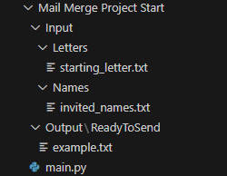

REF
紀錄學習 Udemy-Python-100days of code
Day 24 - Intermediate - Files, Directories and Paths
File 文件
透過內建 open() 處理 file
基本流程: open → read/write → close
Open
使用基本語法 file = open("my_file.txt", mode="r") 方式, 最後還需要使用 file.close() 關閉, 減少 memory 占用
1
2
3
4
5
6
7
8
|
# 基本語法
file = open("my_file.txt", mode="r")
file.close()
# 使用 with（自動處理關閉）
with open("my_file.txt", mode="r") as file:
# 操作檔案
|
模式(mode)
三種主要模式：
"r": 唯讀模式(預設)"w": 寫入模式(覆寫)"a": 附加模式(在檔案末尾新增)
基本操作
Read
1
2
|
with open("my_file.txt", "r") as file:
contents = file.read() # 讀取整個檔案內容
|
Write
1
2
|
with open("my_file.txt", "w") as file:
file.write("新文字內容") # 覆寫原有內容
|
Add content
1
2
|
with open("my_file.txt", "a") as file:
file.write("\n新的一行文字") # 在檔案末尾新增內容
|
Conclusion
- 使用
with 可自動關閉檔案, 減少 memory 占用
- write modee
"w" 會清空原有內容
- 如果檔案不存在,
write 和 add mode 會建立新檔案
String 處理
readline()
w3cschools_redalines
讀取文件中的每一行, 並依序存到 list 中, 每一行都是一個 element
1
2
|
with open("file.txt") as file:
lines = file.readlines() # return list, 每行為一個 element
|
replace()
w3cschools_replace
替換 string 中的特定文字
1
2
|
text = "I like bananas"
new_text = text.replace("bananas", "apples") # result: "I like apples"
|
strip()
w3cschools_strip
移除 string 前後的空格(包含換行 \n)
1
2
|
text = " hello world "
cleaned = text.strip() # result: "hello world"
|
Mail_Merge_Project
利用 with 檔案處理, 搭配字符串處理, 處理信件合併
讀取名單, 替換信件範本, 產出多份信件
Path

main.py
1
2
3
4
5
6
7
8
9
10
|
with open("Input/Names/invited_names.txt") as names:
names_text = names.readlines()
with open("Input/Letters/starting_letter.txt") as letters:
letters_text = letters.read()
for name in names_text:
name = name.replace("\n", "")
with open(f"Output/ReadyToSend/letter_for_{name}.txt", "w") as file:
file.write(letters_text.replace("[name]", name))
|